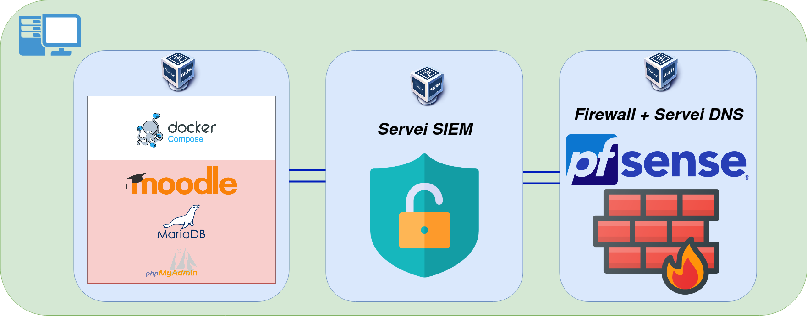

Esquema de xarxa:
Com ja s’ha esmentat anteriorment, utilitzarem tres màquines interconnectades en la mateixa xarxa, la primera un Ubuntu que tindrà 3 contenidors de docker, entre ells el moodle, la segona sera el nostre SIEM amb el ELK stack, i la tercera, que tindrà connexió amb la xarxa de l’escola es un maquinari amb pfsense instal·lat per actuar com a firewall i router.
